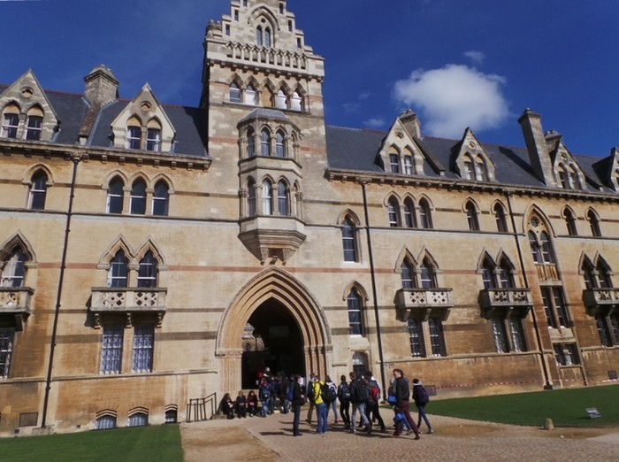

Setelah tiba di Hogwarts, para murid disortir ke
asrama masing-masing dan memulai petualangan baru di
dunia sihir. Di dalam kastil yang megah itu, Harry,
Ron, dan Hermione belajar berbagai ilmu sihir,
bermain Quidditch, dan menjelajahi lorong-lorong
rahasia yang penuh misteri. Namun, kebahagiaan itu
tidak berlangsung lama. Di balik keindahan Hogwarts,
tersembunyi rahasia gelap dan ancaman yang semakin
nyata. Voldemort, penyihir jahat yang selalu
mengincar kekuasaan, kembali mengganggu kedamaian
dunia sihir. Harry mendapati dirinya terikat oleh
takdir besar ketika ia harus mencari dan
menghancurkan Horcrux—benda-benda magis yang
menyimpan potongan jiwa Voldemort. Petualangan ini
membawanya dan teman-temannya melalui berbagai
tantangan, dari teka-teki kuno hingga pertempuran
sengit melawan pasukan kegelapan. Puncaknya terjadi
saat Pertempuran Hogwarts. Seluruh komunitas
sekolah—murid, guru, dan para sekutu—bersatu melawan
kekuatan jahat. Dalam pertempuran yang penuh
keberanian dan pengorbanan, para pahlawan berjuang
untuk melindungi tempat yang telah menjadi rumah
kedua mereka. Dengan tekad yang kuat dan kekuatan
cinta, Harry akhirnya berhasil mengalahkan
Voldemort, memulihkan kedamaian, dan menegakkan
keadilan di dunia sihir. Kisah Hogwarts pun berakhir
dengan pesan bahwa persahabatan, keberanian, dan
cinta adalah kekuatan yang mampu mengalahkan
kegelapan. Hogwarts tidak hanya menjadi sekolah
sihir, tetapi juga simbol harapan dan inspirasi bagi
generasi penerus.